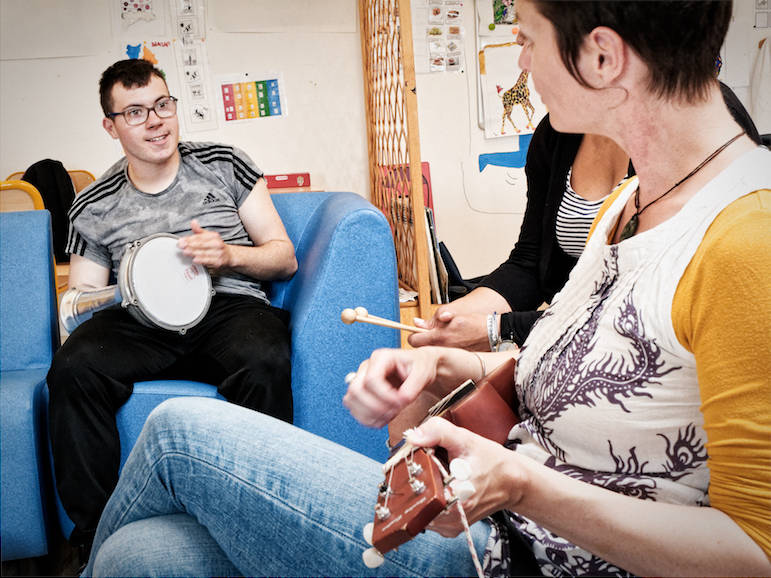

Interventions musicales spécialisées
Auprès des personnes en situation de handicap,
en institution ou pour les particuliers
Musicien multi-instrumentiste, je propose un parcours musical, individuellement ou en petit groupe, à des personnes en situation de handicap. À mi-chemin entre le concert et la musico- thérapie, mes séances mêlent l’écoute et la participation. Le relationnel est au coœur de mon activité. Après avoir proposé un univers sonore, j’invite chacun à y participer.
Trompettiste, puis accessoirement tubiste, je pratique la guitare, le chant, les percussions, les claviers. Je travaille auprès d’IME, UES, et peux me produire au sein d’autres structures (IEM, ITEP, service de jour...) et auprès de particuliers.
J’interviens musicalement auprès de personnes en situation de handicap depuis une dizaine d’années, après une expérience de 11 ans en centres de vacances adaptés (animateur, adjoint, directeur) auprès de l’AFEH1. Je suis titulaire du diplôme universitaire « La musique et l’enfant en situation de handicap » délivré par le CFMI de Tours et dirigée par Geneviève Schneider, responsable pédagogique de l’association « Enfance et Musique2».
Je suis par ailleurs professeur de trompette en école de musique, animateur d’atelier jazz, musiques actuelles, intervenant en ULIS-primaire et ULIS-collège3 depuis de nombreuses années, avec des dispositifs proches des OAE4. Mon parcours musical part d’une école de musique, passe par le conservatoire de Tours, et rencontre au passage les musiques traditionnelles, le jazz, le reggae, la chanson et bien d’autres.

Le travail en équipe est pour moi important ou du moins souhaitable. Les objectifs sont à définir ensemble. Néanmoins, le bien-être, la détente, le lâcher-prise, l’individualisation, la considération, sont des pistes de travail intéressantes. Je ne suis ni animateur musical (je ne chante pas de chanson et ne prépare pas de spectacle), ni musico-thérapeute, même si je peux, si un travail d’équipe le permet, participer à des actions thérapeutiques.
1. AFEH : Association des Familles d’Enfant Handicapés de la Poste et d’Orange (plus d'informations)
2. Le titre exact du DU de l’université de Tours délivré par le CFMI est « La Musique et le tout-petit, la musique et l'enfant en situation de handicap ». Enfance et Musique (plus d’information)
3. ULIS : Unité Localisée pour l’Inclusion Scolaire, des dispositifs qui permettent la scolarisation d'élèves en situation de handicap, en primaire ou au collège (plus d'informations)
4. OAE : Orchestre à l’école, dispositif d’apprentissage collectif de la musique (plus d'informations)